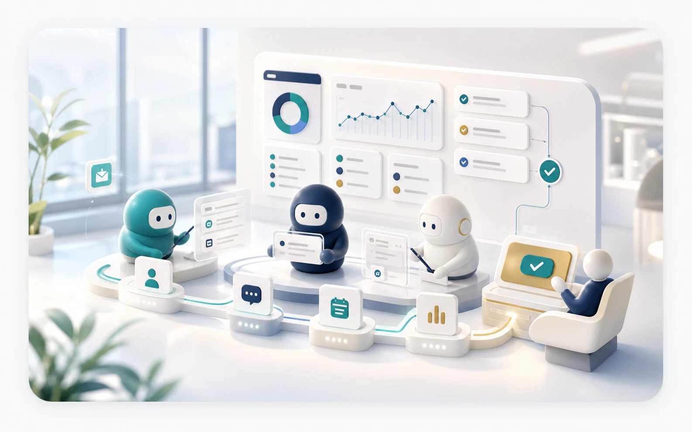
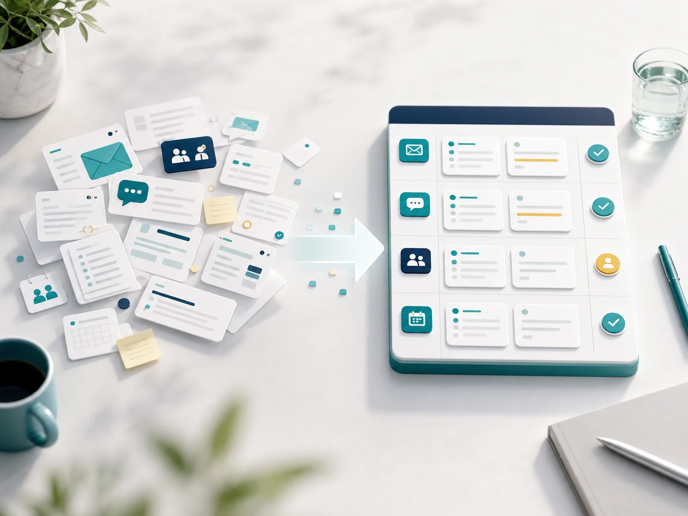
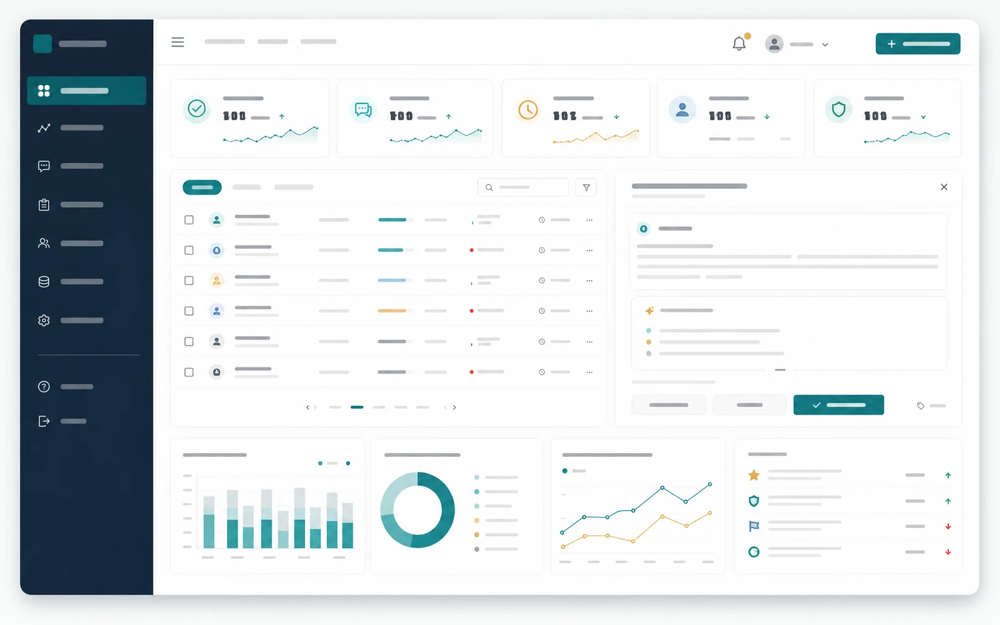
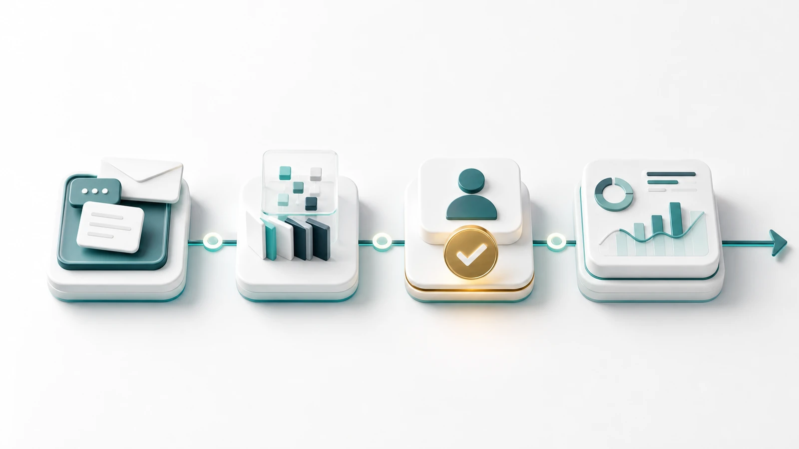

メール、フォーム、チャットから依頼を受け取る。
AI operations crew
雑務を、AI業務チームに渡す。
問い合わせの整理、営業準備、社内確認、レポート化まで。人が判断する前の下準備を、専用AIチームが1つの運用画面で進めます。
- 4役
- 受付、営業事務、調査、報告を分担
- 1画面
- 進行状況と人の確認待ちを可視化
- 0送信
- 重要判断はAIだけで外部送信しない

Operation gap
AIツールを入れても、現場の雑務は残りやすい。
単体のチャットAIだけでは、誰が確認するか、どこに保存するか、どの条件で人に渡すかが曖昧になりがちです。

必要なのは、AIの回答力より先に運用設計。
人とAIの担当範囲を分け、業務の入口から確認待ちまでを同じ画面で追える状態にします。
- 01問い合わせ内容が担当者ごとに散らばる
- 02AIの下書き確認が後回しになる
- 03社内資料の探し直しが毎回発生する
- 04対応履歴が改善に使われない
Workflow
依頼を受けてから、人が判断する直前までを整える。
すべてを自動化するのではなく、情報整理、確認依頼、履歴化をAIに任せます。人は判断と例外対応に集中できます。
営業、採用、請求、社内確認などに振り分ける。
FAQ、過去履歴、社内資料から必要情報を探す。
返信案、相談票、作業メモを作成する。
金額、契約、例外対応は担当者に止める。
対応履歴を残し、改善点を週次で見える化する。
Dashboard
運用画面は、AIの成果ではなく人の確認待ちを見せる。
現場で大事なのは、AIが何を返したかより「今どこで止まっているか」です。未処理、承認待ち、改善対象を1画面で確認できます。

Human boundary
AIに任せない条件まで、先に決めておく。
ポートフォリオで見せるべきなのは「全部自動化できます」ではなく、事故を起こさない導入設計です。AIDEA OpsはAIの担当範囲と人の停止条件を同時に見せます。
値引き、契約、支払い条件はAIが確定せず、担当者確認で止める。
感情対応や個人情報を含む依頼は、要約だけ作って人に通知する。
外部メールや見積送付は、AIの下書き後に人が最終送信する。
Design board
導入前に、AIへ渡す仕事と渡さない仕事を決める。
「なんとなくAI化」ではなく、入口、参照資料、人の承認条件をボード化してから小さく始めます。
入口
問い合わせフォーム
代表メール
営業相談、資料請求、採用質問を受ける。
件名と本文から依頼種別を分類する。
AIの担当
要約と質問抽出
社内資料検索
担当者が読むべき情報だけに圧縮する。
FAQ、価格表、過去対応から候補を出す。
人の確認
金額と契約条件
例外対応
外部送信前に必ず担当者で止める。
クレーム、個人情報、判断不能は即通知する。
Value
見せたい価値を、派手なAI感ではなく業務改善として伝える。
未処理、保留、確認待ちを一覧化し、誰が何を見るべきかを明確にします。
担当者の頭の中にある対応手順を、AIが使える業務ルールとして整えます。
よくある質問、止まりやすい判断、返信品質を週次で振り返れる形にします。
Start small
まずは1業務だけ、AI業務チーム化する。
受付、営業事務、社内確認、レポート化のどれから始めるべきかを整理します。現場の判断を残したまま、小さく試せる導入範囲を決めます。
01 業務を1つ選ぶ
02 AIの担当を区切る
03 人の停止条件を決める
